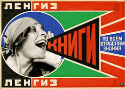
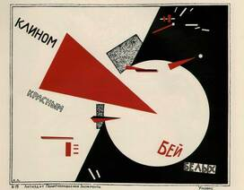

Session 4: Revolution & Early Modernism
Constructivism
WHAT IS CONSTRUCTIVISM?...
Constructivism was a concept formed during the early 20th century in Russia by Vladimir Tatlin. The constructivists believed that art should portray the modern world. The constructivist movement was largely inspired by Picasso and his knowledge of cubism. Tatlin took these ideas and created his own three dimensional structures, made mainly of industrial materials.
Aleksandr Rodchenko

Aleksandr Rodchenko was a Russian painter, sculptor, designer and photographer. At this time, photography was a fairly familiar concept, and to many, was a trusted medium; what you saw was reality. Rodchenko was one of the first constructivist's who experimented with photography and typography, creating a kind of collage of work. The poster to the left, (Books!) shows an example of Rodchenko's use of photography. The poster is clear and easy to understand. The bold use of colour and capitalisation of the lettering helps to grab the attention of the audience. The woman on the poster is Liyla Brik, a woman often associated with the constructivist movement. Having the photograph be of someone directly linked to the movement allows the message of the poster to be conveyed to the Communist audience clearly.
El Lissitzky

El Lissitzky was a Russian designer, painter and typographer. Unlike Rodchenko, Lissitzky uses older, more analogue techniques when creating his posters. The poster to the left, (Beat the Whites with the Red Wedge) is a lithograph of one of his earlier works. In this example, Lissitzky is showing the Bolshevik revolutionaries penetrating the anti-communist White army during the Civil War. Both artists make use of the diagonals in each poster, creating clear, bold shapes, staying true to the industrial and geometrical guidelines of the constructivist movement. The use of negative space in each poster allows for greater contrast within the composition, making the message easier to interpret. Both posters are conveying strong ideas, so the use of bold colours, harsh lines and capital letters helps to translate these concepts.